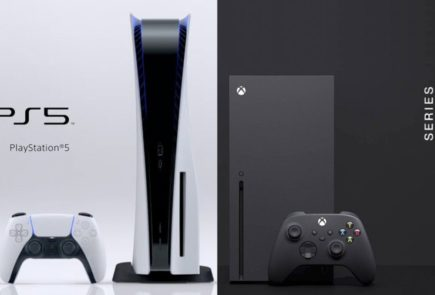

es una consola de videojuegos de sobremesa desarrollada por Sony Interactive Entertainment. Es la sucesora de la PlayStation 4, y se lanzó el 12 de noviembre de 2020 en Norteamérica, Japón, Australasia y Corea del Sur, mientras que fue lanzada el 19 de noviembre de 2020 en el resto del mundo. Es la quinta consola de sobremesa de la marca PlayStation y la tercera en ser diseñada por Mark Cerny. A partir de su lanzamiento la consola contará con dos modelos: una consola PlayStation 5 con lector de discos BD UHD y una versión digital llamada, PlayStation 5 Digital Edition sin el lector. La consola PS5 compite contra las consolas Xbox Series X|S de Microsoft y Switch de Nintendo para abrir paso a la novena generación de videojuegos.
